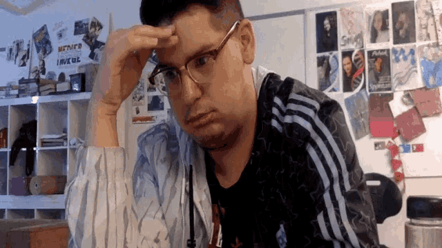
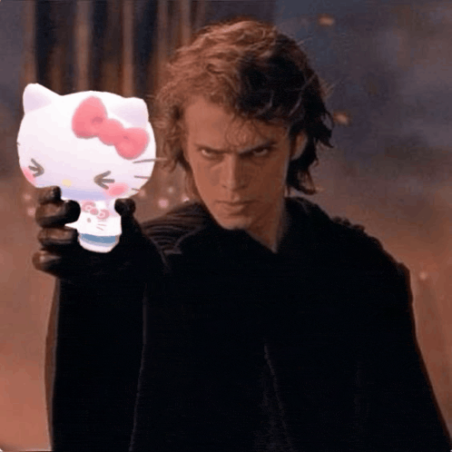
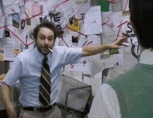
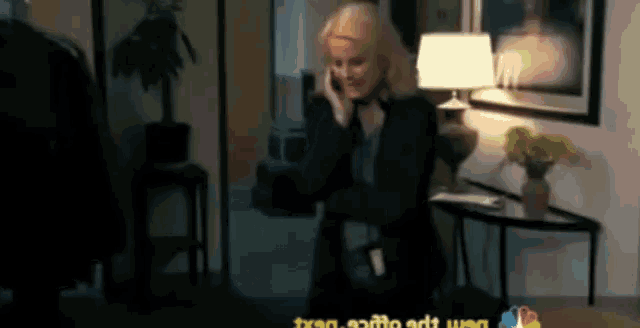
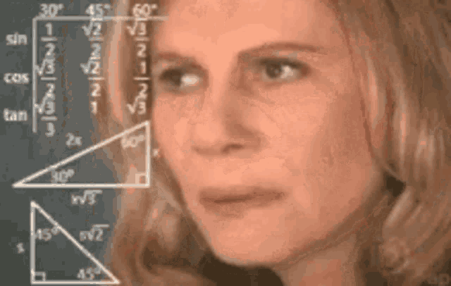

🚀 Estou a construir uma agência de AI para PMEs em Portugal — quero o teu olho crítico antes de avançar 👀
🤷 A maioria das PMEs em Portugal opera com presença digital, funis e operações sub-otimizadas — e nem sabem quanto isso lhes custa
Não é só falta de site. É funil que não converte, operações manuais que não escalam, e processos que dependem de pessoas que não conseguem contratar.

PME média, quando lhe perguntam pelo funil de conversão⚡ AI tornou viável entregar marketing, vendas e operações de qualidade enterprise a preço de PME — pela primeira vez
O que antes exigia equipa interna ou agência cara — campanhas, automações, software à medida, processos otimizados — hoje cabe num operador solo com o stack certo. A janela é agora.

a primeira vez na história que a matemática faz sentido para PMEs🎯 Entrar pelo low-hanging fruit gratuito, productizar por nicho, atacar o maior bottleneck do cliente, e licenciar o AIOS que sair daí
Quatro fases. O bottleneck pode ser aquisição, automação, implementação de software, ou operações — depende do diagnóstico. Cada fase alimenta a próxima com cash, testemunhos e IP reutilizável.

eu, a explicar como tudo se conecta🗺️ A estratégia tem 4 fases — cada uma alimenta a próxima
Aprender com pequenos
Free projects, amigos, warm outreach. Construir reps, ativos e o motor.
Productização vertical
Escolher 1 nicho. Resolver bottleneck específico, não vender só "site".
Implementation partner
Tornar-me o departamento de marketing+vendas+IT outsourced.
AIOS
Construir o sistema operacional do negócio do cliente. Licenciar.
🌱 A Fase 1 tem 3 movimentos sobrepostos — começo com warm, ligo cold em paralelo, e contrato part-time aos ~3 meses
A porta de entrada é uma calculadora gratuita: "quanto estás a perder?"
Pontua presença online vs. concorrência do nicho — GBP, SEO, reviews, site. Calcula receita perdida. Em troca: email. Depois: nurture.
O outbound não pede nada: "envio-te um relatório do teu nicho de qualquer maneira"
Mesmo que nunca trabalhemos juntos. Reciprocidade primeiro, venda nunca na primeira mensagem. Filtra os curiosos dos sérios.
Em reuniões e formações uso efeitos-uau imediatos com ferramentas grátis
Backgrounds Teams, drafts automáticos de email, slides gerados com AI, Apps Script para Gmail. Dopamina logo no primeiro contacto. Eles assinam o "como é que isto é possível?"
A pipeline produtizada que o que dantes demorava dias, hoje demora horas
🧲 O lead magnet é o que faz outbound virar inbound
Digital Presence Checker: webapp grátis (já construída). Cada dono de negócio descobre quanto está a perder em €/mês — em troca do email. Depois entra na pipeline.
- Score de presença digital (GBP, SEO, reviews, site) vs. nicho
- Quantifica receita perdida em € com base em ticket médio
- Combinado com case studies → paid ads → inbound automático
 o momento em que paras de caçar e começas a ser caçado
o momento em que paras de caçar e começas a ser caçado
🎯 Com o panorama dos nichos da Fase 1, escolho um e ataco o bottleneck completo — outbound, inbound, paid, automação, agents
🤝 Torno-me o parceiro de implementação do nicho — marketing, vendas, IT, AI — tudo o que nunca vão poder contratar internamente

o parceiro que abraça o problema todo, não só uma fatia🧠 Quando há product-market fit no nicho, licencio o AIOS a todos os outros — passo de serviço a produto
🔍 Desconstrói isto. Onde estás a ver falhas de raciocínio?

tu, a tentar perceber se isto faz mesmo sentido